Technical requirements
Before start the installation, be sure, your systems should meet the following requirements.
Server Requirement
- PHP 8.1
- MySQL 8.0.13+
- Apache 2.4+
Browser Requirements
- Firefox
- Safari
- Google Chrome
- Opera
- Edge
Configuration Options
We recommend to use the following servers in your PC to develop your site.
- LAMP (Linux)
- WAMP (Windows)
- MAMP (Macintosh)
- XAMPP (Multi-platform)
Quickstart Package Installation
In All Joomla templates packages created by OrdaSoft you can find Quickstart Package. Quickstart Package allow you to install Joomla template with demo data in few clicks. We highly recommend this method of Joomla installation
1. Uploading on server
Through FileZilla or another FTP software, upload all files from QuickStart Package folder to your website directory.
2. Run the Joomla 4.x Installation Wizard
Open your web browser and go to the folder that you uploaded your QuickStart Package.
3. Select Installation Language, Setup Site Name
On this page, you need to select the language and name of the site
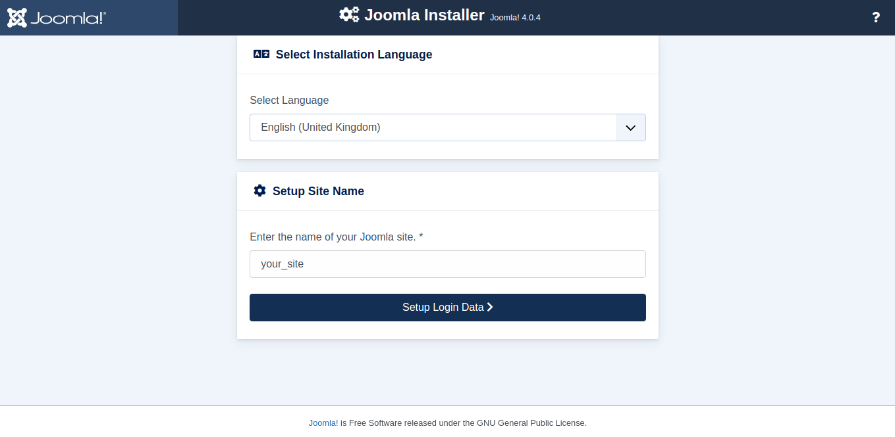{kind=link}
4. Login Data
On this page, you need to enter the real name of the super user, the name of the super user, the password and enter the email address
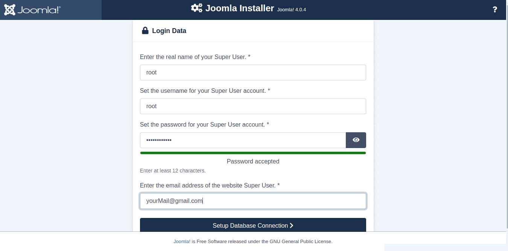{kind=link}
5. Login Data
At this stage, you need to select the type of database, enter a name and password to connect to the database, enter the name of your database, enter or leave a randomly generated prefix, as well as connection encryption
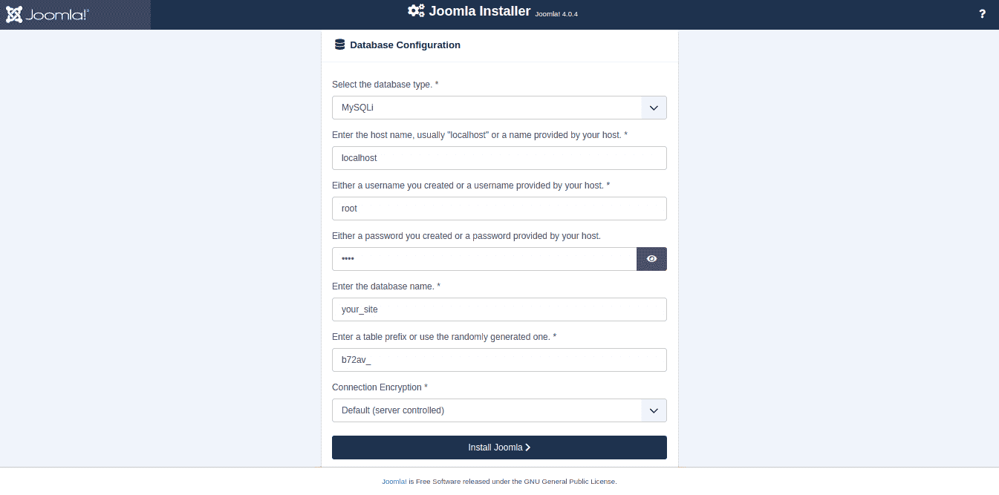{kind=link}
6. Congratulations!
Your Joomla site is ready
Also on this page you can select the languages that are installed for your site for the admin panel and frontend
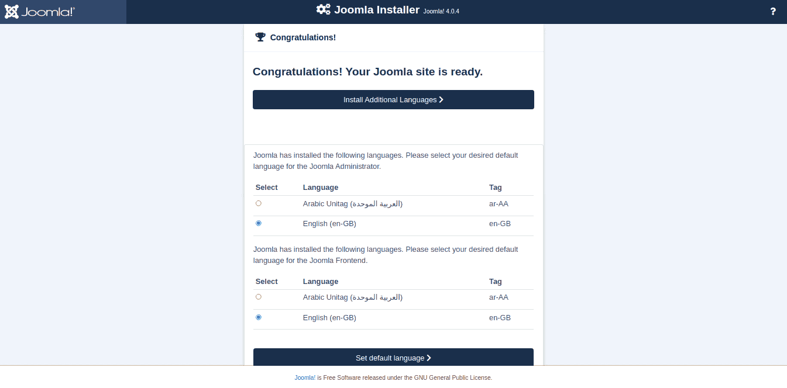{kind=link}
Select one of the options below: complete and open the site or complete and open the admin
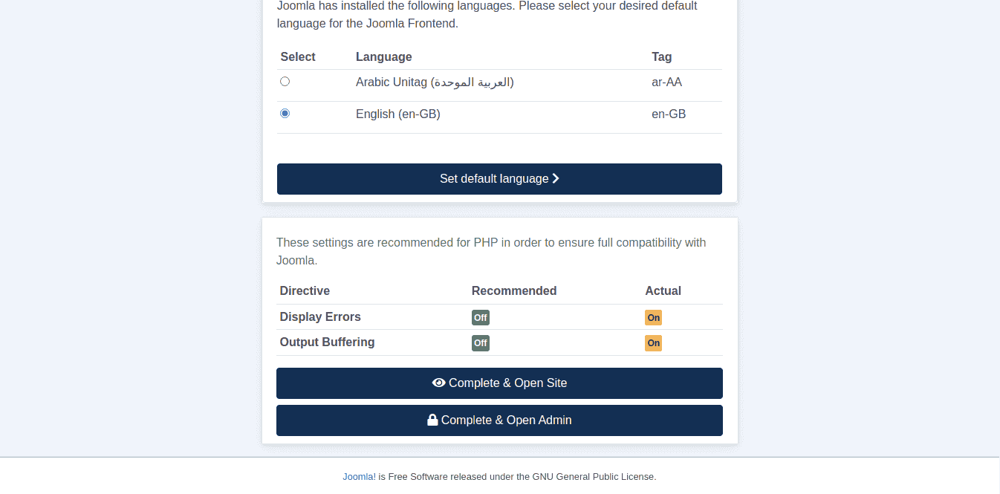{kind=link}
Single Template installation
In All Joomla templates packages created by OrdaSoft you can find Joomla template file. Joomla template installation via extension should take no more than one minute.
1. Enter to Admin area
You need to go to the admin panel -> System -> Extensions
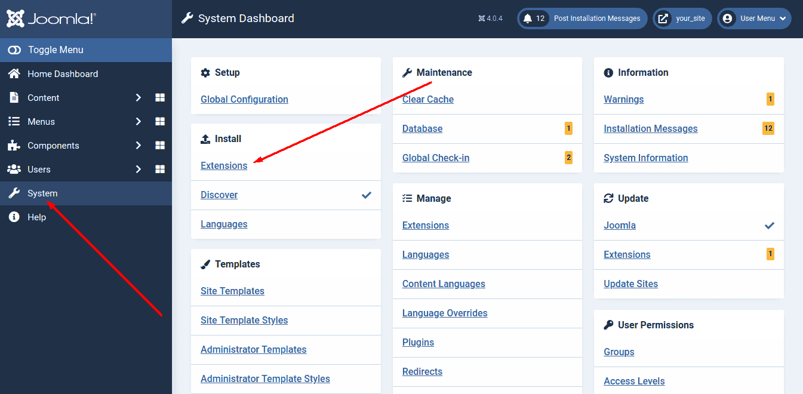{kind=link}
2. Upload Package File
You need to go to the tab - Upload Package File and press the button - Browse for file
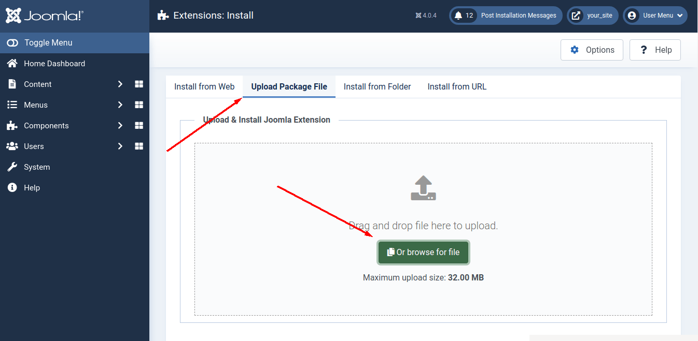{kind=link}
3. File selection
In the window that appears, you must select the template file and click open

4. Finish
Upon successful installation, you will see the following message
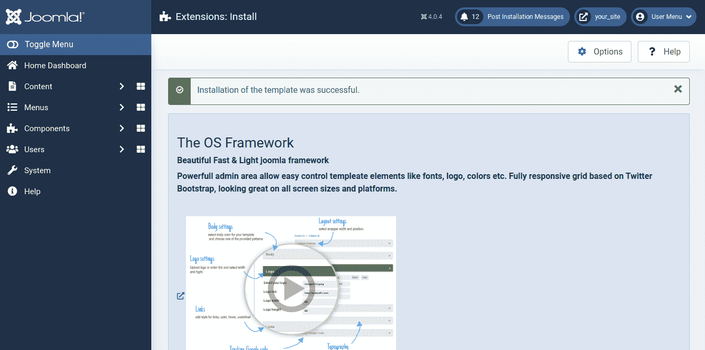{kind=link}
FAQ
What is the difference between Quick Start package and single template installation?
Installing Quick Start package you get the same site as at the demo version. Quick Start package contains an entire Joomla installation and already configured Joomla template and extensions which we used on the demo site. Installing Joomla Template via Extension manager doesn't include sample date. You will need by your self to install and configure all extensions.
I install Quick Start package but nothing is come out, what is the problem?
You forgot to install sample data. For successful template installation you need to install sample data, select Default English (GB) Sample Data.
Admin Panel
All Joomla templates created by OrdaSoft based on OS blank template. Customize logo, fonts, links etc., via template admin area.
Go to Extensions > Template Manager and select installed template
Body
In Template administration panel you can select color and one of provided pattern for body, available settings:
Background
- Body Color
- Body pattern
- Body pattern
- Custom background image
- Background-size
- Background-repeat
- Background-attachment
How to upload my own body pattern?
To do this, you must upload new pattern at your template via FTP into the folder templates/your_template/images.Then you need to declare a new pattern in the templateDetails.xml file is in the folder templates/your_template/.There you should find the following line of code:
<field name="btlabout" type="btlabout" description="" label="" />
<field name="body_color" type="text" label="Body Color:" description="Example: #000000" default="#f8f8f8"></field>
<field name="body_background" type="list" label="Body pattern:">
<option value="">None</option>
<option value="01.png">Stone</option>
<option value="file name of your pattern">Name of your pattern</option>
In the above, 'file name of your pattern' - the name of file your new pattern (for example stripe.png) and 'Name of your pattern' - pattern name to be displayed in list of all pattern in admin area.
Custom background image
You can set the background image for the body using the uploader
Links
Change links color and style for Body. Available settings:
- Body Links Color
- Body Links hover color
- Body Links underline
- Body Links hover underline
Font
Change Font color and style for Body. Available settings:
- Body Font
- Body Links Font
- Body text color
H1, H2, H3, H4, H5, H6
Change Font color and style for Body header elements. Available settings:
- Font
- Text color
- Font-size
- Font-weight
- Text-transform
Header, Content, Footer
Change style for templete section- Header, Content, Footer.The settings for these tabs are the same as those for the template body. You can customize these sections separately, or draw styles from the tab "body" using the buttons "Inherit from body".
Logo
Upload your own logo in few simple steps. Press to "Select" button and in the popup window, select the logo, available settings:
- Upload logo
- Logo link
- Logo width
- Logo height
Meni links
You can configure 5 different styles for menu links. Add Menu Class Suffix in field "Custom menu class suffix". Available settings:
- Menu class suffix
- Menu color
- Menu submenu color
- Item hover background
- Menu Font
- Menu links color
- Menu links hover color
- Menu links underline
- Menu links hover underline
Button Style
You can style the background, text, box, borders and hover 3 different types of buttons. To do this, add the selector of the desired button in the field "Selectors". Available settings:
- First type buttons
Background
- Background-color
Font
- Font-color
- Font-color
- Font-size
- Line-height
- Font-weight
- Text-transform
- Text-shadow
Box
- Padding-top
- Padding-right
- Padding-bottom
- Padding-left
- Box-shadow
Border
- Border-radius
- Border-width
- Border-color
- Border-style:
Hover
- Background
- Border-color
- Font-color
Prelouder
In this tab, you can customize the type and color of the preloader. Available settings:
- Type
- Color
Social Links
In this tab you can specify social links.
Copyright
In this field you can write your own copyright
Typography
OrdaSoft themes use Google Fonts. Google Fonts provides high-quality fonts that you can include in your pages using the Google Fonts API. Benefits of the Google Fonts API include:
- A choice of high quality open source fonts.
- Works in most browsers.
- Extremely easy to use.
In template added most popular Google fonts and You can specify your own font for: Body, Body Links, Top Menu, Main Menu, Footer, h1 - h6.
How to add new font from Google?
You need to get the connection code font on the Google Fonts site.This code should look like:
<link href='http://fonts.googleapis.com/css?family=Raleway' rel='stylesheet' type='text/css'>
Then you should to insert this generated code before closing tag </head> in index.php file in the folder templates/your_template/.
For the emergence of the new font in the font list in admin area, add the following code in the templateDetails.xml file is in the folder templates/your_template/:
<field name="h1_font" type="list" label="h1 Font:" default="Arial, sans-serif">
<option value="Abel, sans-serif">Abel</option>
<option value="Raleway, sans-serif">Raleway</option>
This code has added a new font 'Raleway' for the tag H1 to the list of fonts in admin area.
Module positions
Module positions are placeholders in a template. They identify positions within the template and tell the Joomla! application where to place output from modules assigned to a particular position. The template designer has complete control over module positions, creating variations between templates and the respective Joomla! default positions assigned to modules in the installation sample data.
For example, the module position POSITION-1 could be defined to be on the left side of the template to display a site navigation menu. So if a module is assigned the POSITION-1 position, it will be displayed wherever the designer puts that Left module position - not necessarily the left side of the page.
templateDetails.xml
The templateDetails.xml file contains all the installation and core information for a template, including the module positions it utilizes and displays. Here is a brief list of the commonly used names for the various module positions.
<positions>
<position>Search</position>
<position>topMenu</position>
<position>Cart</position>
<position>Top1</position>
<position>Top2</position>
<position>Top3</position>
<position>Top4</position>
<position>Mainmenu</position>
<position>Breadcrumbs</position>
<position>Slideshow</position>
<position>location_map</position>
<position>SidebarRight</position>
<position>SidebarLeft</position>
<position>Feature1</position>
<position>Feature2</position> <position>Feature3</position>
<position>ContentTop1</position>
<position>ContentTop2</position>
<position>ContentBottom1</position>
<position>ContentBottom2</position>
<position>Bottom1</position>
<position>Bottom2</position>
<position>Bottom3</position>
<position>Bottom4</position>
<position>footerMenu</position>
<position>Footer1</position>
<position>Footer2</position>
<position>Footer3</position>
<position>Footer4</position>
<position>Debug</position>
<position>position-0</position>
<position>position-1</position>
<position>position-2</position>
<position>position-3</position>
<position>position-4</position>
<position>position-5</position>
<position>position-6</position>
<position>position-7</position>
<position>position-8</position>
<position>position-9</position>
<position>position-10</position>
<position>position-11</position>
<position>position-12</position>
<position>position-13</position>
<position>position-14</position>
</positions>
Although these are commonly used, it is up to the template developer to choose both a module position name and an accompanying display style. The addition of module positions, as displayed above, is implemented in between the <positions> and </positions> tags. In between those tags in the templateDetails.xml file, add the name of the module position in between a set of <position> and </position> tags.
Use and implementation
A Joomla! template displays a set of modules added to a specific position using the <span>jdoc:include /> statement shown below (for further information about <span>jdoc:include />
<jdoc:include type="modules" name="name of module position" style="xhtml" />
Visualization
It's possible to visualize all modules set on a template by calling the "tp=1" query string on the front-end.
http://www.yourdomain.com/index.php?tp=1
Template updating
Backup your Joomla site
To help ensure that you don't lose your Joomla database or files in process updating template you should make backup.
Uninstall your Joomla template
Go to: Joomla Admin Area -> Extensions -> Extension Manager. Open the Manage tab. Select Template from the Select Type drop-down menu. Search for the chosen template in the filtered results and click on the check box besides it. Find the Uninstall icon in the upper right Joomla menu and click on it to completely remove the chosen template.
Install your new Joomla template
Log into the back-end of your site (www.your-site.com/administrator/). Go to: Joomla Admin Area -> Extensions -> Extension Manager. You see the page "Extension Manager". From here you can install your Templates, Plugins, Modules, Components and Languages. You have three options:
- Upload Package File - (select a package from your PC, upload and install it)
- Install from Directory - (enter the path where the package is located on your webserver)
- Install from URL - (enter the URL to the package)
Option 3 does everything for you, your environment needs to be properly configured to allow this. Option 1 requires you to download the extension to your PC. Option 2 requires you to unzip and move the folders/files to your webserver. All option require the webserver to have write access to the webspace.
Choose the first method: Upload Package File. Select the package from your PC and click the button "Upload File & Install".
Home page
"OS Touch Slider"
"OS Touch Slider" you can change via template frontend area, Log in -> OS Touch Slider settings.
{kind=link}
"New arrival"
This is VirtueMart Products, to change this block, you need to go to the admin panel -> content -> site modules
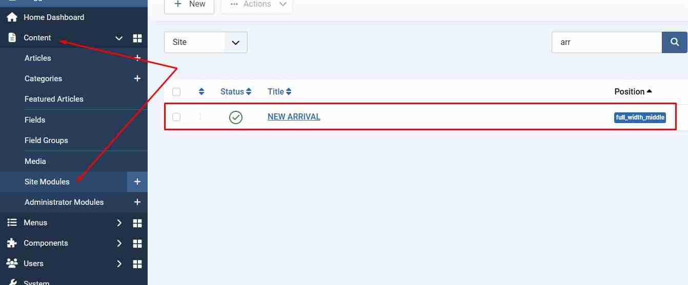{kind=link}
{kind=link}
"Gallery"
This is Gallery, to change this block, you need to go to the admin panel -> components -> Gallery
 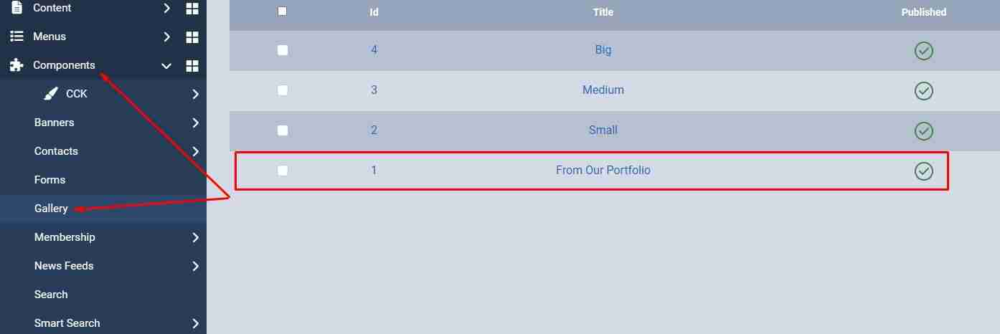
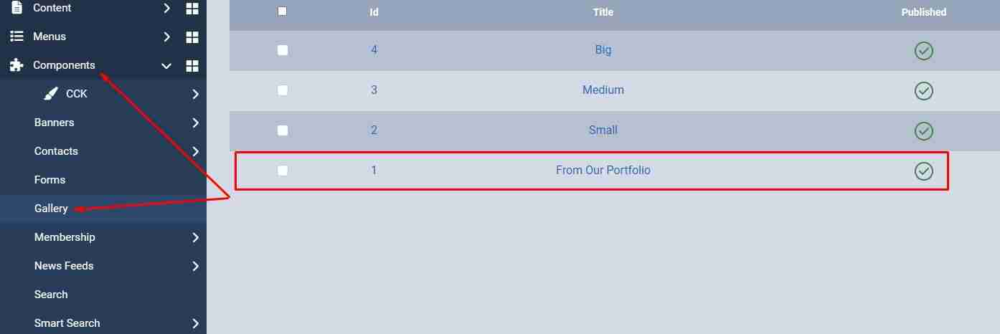
{kind=link}
"Latest blog"
This is OS CCK, to change this block, you need to go to the admin panel -> components -> OS CCK -> Layouts
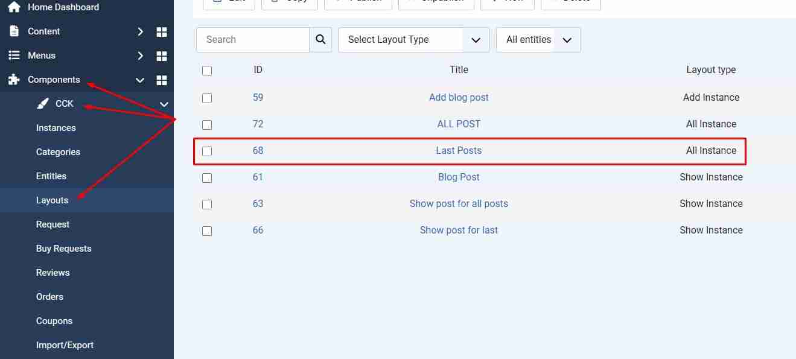{kind=link}
{kind=link}
Support
Support of all templates is carried out on OrdaSoft forum
Created: 2015/10/12
- latest Update: 2025/04/17
- By OrdaSoft
- http://ordasoft.com/